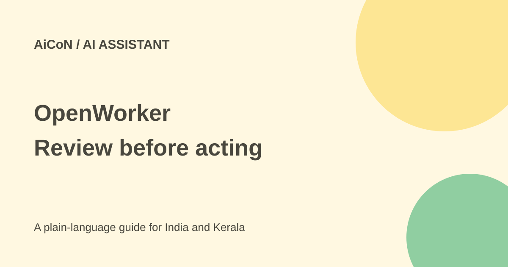

OpenWorker: desktop AI, approvals and provider costs
OpenWorker is an open-source desktop app for working across files and connected tools. It uses your chosen model and asks before writes, sends and shell commands, according to its README. It is in open beta.

What it can help with
The official site describes tasks such as code review, document work, calendar checks and replies. Its examples are demonstrations, not proof that every real task will work correctly. The repository lists more than 25 integrations and MCP tools with per-tool control.
The app uses MIT-licensed code. You bring a model API key or point it at a local model such as Ollama. The README says unattended runs park approval requests in an inbox instead of acting on their own.
Local-first does not mean no sharing
The developer says conversations, connector tokens and model keys are stored locally. The optional cloud account brokers sign-in for one-click connectors. Manual credentials can be used while signed out.
The privacy policy says conversation content goes directly to the model provider you choose. That provider has its own terms. The optional cloud account holds identity, minimum connection metadata and content-free usage counts that can be turned off. These are operator statements, not independently verified security guarantees.
How to try it carefully
- Open the official site and repository. Read the beta and platform requirements.
- Use a spare folder with no customer information or production credentials.
- Install the correct official release for your operating system.
- Choose a model account and check its price, data terms and spending controls.
- Start signed out if manual credentials meet your needs; do not add a cloud account just because a button is offered.
- Connect one test service with minimum permissions and request a draft or read-only check.
- Inspect the result and the exact target before approving a write, send or command.
- Revoke unused connector access and keep backups before expanding the workflow.
Windows and Mac warnings
The current repository lists macOS 12 or later with signed and notarised builds. Windows 10/11 x64 builds are not yet code-signed, so SmartScreen can warn. Signing is described as in progress.
A warning is not something to bypass automatically. Confirm the source, release and file before continuing. We did not install either build or test its approval controls. Keep experimental software away from critical work.
Free or paid in India?
The site says you pay nothing to OpenWorker and pay the selected model provider directly. MIT licensing does not make model calls free. Local models also need suitable hardware and power. No single rupee subscription applies to every configuration.
For a Kerala freelancer, test with invented files rather than client material. Check a customer's rules before routing their documents through a hosted model or connecting their systems.
What changed since the original post?
The unsigned Windows warning remains in the repository. We added the privacy policy's distinction between local storage, cloud connection metadata and direct transmission to a chosen model. No tool account was connected for this review.
Frequently asked questions
Can it run while signed out?
The developer says yes, using model and connector credentials you supply.
Will my content reach a cloud model?
Yes if you choose that provider. Local storage alone does not prevent transmission.
Are approvals a guarantee of accuracy?
No. Review the recipient, file, command and result yourself.
Sources: OpenWorker site · Official repository · Privacy policy · Actual MIT licence. Checked 7 October 2026.